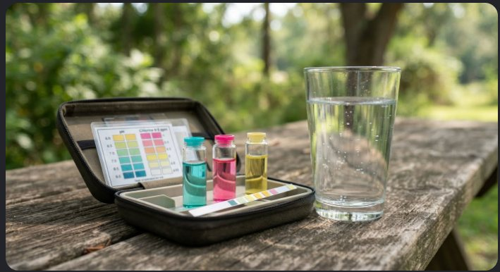

Environment & Energy
The Quiet Threat in Your Drinking Water: Unravelling Groundwater Fluoride

Across the Great Rift Valley and surrounding volcanic regions in East Africa, groundwater extracted from deep boreholes serves as a primary lifeline for millions of residents. Yet beneath the surface lies a silent chemical challenge: naturally occurring fluoride leaching from underground volcanic rock formations into aquifers. While fluoride in low, controlled concentrations (below 1.5 milligrams per liter, according to World Health Organization guidelines) strengthens tooth enamel and prevents decay, chronic ingestion of elevated levels triggers severe health complications, starting with dental fluorosis—permanent brown staining and pitting of teeth—and progressing to crippling skeletal fluorosis, which causes joint stiffness, bone deformities, and chronic pain.
Because contaminated water looks, smells, and tastes identical to safe drinking water, entire households often remain unaware of the hazard until physical symptoms appear in growing children.
“The challenge with fluoride is that it is entirely invisible, tasteless, and odorless,” explains Dr. Emily Chepkemboi, a hydrogeologist and environmental health researcher. “Communities often consume it for generations unaware until visible skeletal changes manifest in children and adults. By the time joint pain sets in, the structural damage to the bones is largely irreversible, making early water testing and prevention critical.”
In rural areas where piped municipal water is unavailable, abandoning boreholes is rarely an option, especially during prolonged dry spells. Instead, environmental engineers and public health teams are deploying decentralized, low-cost defluoridation technologies tailored for village-level management. Among the most effective methods are contact precipitation and adsorption filters packed with locally sourced bone char or activated alumina, which bind to fluoride ions as water passes through treatment columns.
Recent pilot programs across Nakuru, Baringo, and Machakos counties have demonstrated that training local water committees to monitor fluoride levels using simple colorimetric field kits significantly reduces exposure. Paired with rainwater harvesting during wet seasons to dilute high-fluoride groundwater, these community-led interventions are turning the tide—ensuring that access to water does not come at the cost of lifelong disability.